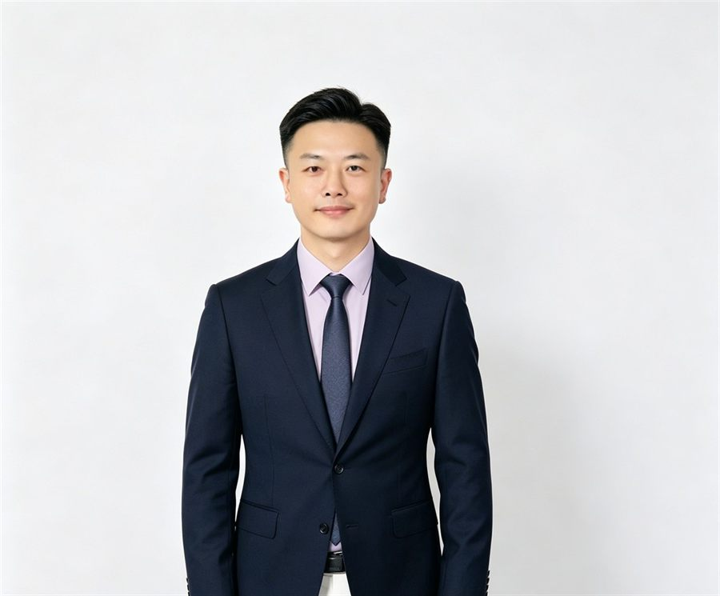

Huiyan Method
不是给你一份学校名单，而是设计一条能走通的留学路径。
从专业内容、申请可行性、城市资源到职业路径，帮助学生知道为什么选、如何申、入学后会面对什么。
慧研国际教育 · 英联邦大学专业选择与升学路径规划
不是先给你一份学校名单，而是先判断这个专业到底学什么、怎么考、难不难、适不适合、未来通向哪里。
慧研用专业雷达拆解课程结构、考核方式、学习难度、适配人群和职业出口，再为学生制定更稳健的英联邦申请路径。
Huiyan Method
从专业内容、申请可行性、城市资源到职业路径，帮助学生知道为什么选、如何申、入学后会面对什么。
先拆课程结构和考核方式，再决定院校清单。
每个申请目标都说明机会、限制和备选路线。
从申请执行延伸到学术适应、职业规划和本地支持。
About Huiyan
慧研国际教育是一家英国注册国际教育咨询机构，专注英联邦国家本科、硕士、博士申请规划，并延伸至学术辅导、职业规划与海外落地支持。我们不把申请理解为简单的学校清单和文书包装，而是从课程结构、学生背景、未来职业路径和家庭预算出发，设计更稳健的申请路线。
英国注册国际教育咨询机构，服务覆盖英联邦本科、硕士、博士申请，以及学术、职业和海外本地事务支持。
规划从专业和课程开始，而不是从排名开始。我们会把国家、院校、专业、城市资源和职业路径放在一起判断。
真实评估、路径论证、长期陪伴。不做虚假承诺，不做模板化申请，也不把学生差异压进同一套方案。
Huiyan Programme Radar
专业雷达不是普通选校表，也不是简单专业百科。它是慧研用于拆解英联邦大学专业的判断方法。我们会从课程结构、考核方式、学习难度、适配人群和职业出口五个维度，判断一个专业是否适合学生，是否能读下来，是否能衔接未来发展，再决定学校选择和申请路径。
点击下方五个维度，查看慧研如何把公开课程信息转化为申请前的判断。
Current Dimension
看清必修课、选修课、项目和论文要求。
想知道自己适合什么专业？
预约一次专业定位咨询Trust Framework
慧研不公开未获授权的学生信息，不使用夸张录取承诺，也不把培训证书包装成授权关系。我们把公司身份、团队背景、服务边界和风险说明清楚呈现，让学生和家庭在充分理解后做决定。
英国注册公司，公开公司主体、联系方式和英国地址。
团队成员完成相关培训，并遵循英国教育顾问职业行为规范。
英国本地学习、科研、职业与生活经验参与申请判断。
硕博背景顾问参与专业认知、研究规划和材料策略。
不承诺保录，提供真实评估、路径设计和风险控制。
Services
官网主流程保持四步，让学生和家庭快速理解合作方式；完整项目管理流程放在下方，呈现慧研从初筛、诊断、材料到入学后的长期陪伴。
在确定院校清单前，先把学生背景、专业方向、国家路径、城市资源、家庭预算和职业目标放在一起论证。
了解学生背景、目标国家、专业方向、预算、时间规划与家庭期待。
结合课程、学校、申请要求、职业目标与风险因素，制定申请路径。
沟通机会、限制、风险与预期，优化最终策略。
推进材料准备、申请递交、面试辅导、签证与行前支持。
Full-cycle Service Journey
Team
团队成员拥有英国学习、科研、申请和职业发展经验，参与选校定位、专业判断、申请材料与长期发展路径设计。
专注院校定位、专业方向规划与长期职业路径衔接。
专注 PS、Research Proposal、CV 与高竞争力申请材料。
专注 Graduate Scheme、简历优化与面试辅导。
现于机构研究所任职，专注专业选择与学术路径规划。

专注签证续签、英国生活衔接与本地事务支持。
专注本科课程辅导、考试准备、论文指导与学术能力提升。
Why Huiyan
在没有真实授权学生评价前，我们不展示客户评价或未获授权的学生信息。以下是慧研的服务原则。
不用标准模板覆盖每个学生的差异，先理解学生真实背景、能力结构和家庭目标。
在推荐学校前，先拆解背景、目标、风险和时间线，避免只凭排名做判断。
关注录取，也关注学生是否读得下、适应得好、走得远。
重要申请决策前提供清晰论证和风险说明，让家庭知道每一步为什么这样走。
For Education Partners
慧研可为国内高报机构、国际课程中心、教育咨询机构和升学顾问团队提供英联邦专业认知、路径规划、学生诊断与申请执行协同。
Contact
扫码添加顾问微信，或通过邮箱、电话与我们联系。公众号：慧研留学。

扫码添加顾问微信
官网内容用于一般教育咨询与留学规划参考，不构成录取、签证、就业或移民结果承诺。院校课程设置、入学要求、学费、签证政策及申请截止日期可能变化，具体信息应以大学官网、官方招生页面及相关政府机构最新公布为准。
慧研国际教育不使用未获授权的学生个人信息或案例，不将培训证书表述为大学或机构授权关系。British Council 相关资质仅表述为 UK Agent & Counsellor Training Completed。
通过网站、微信、邮箱或电话提交的个人信息仅用于教育咨询、申请评估、服务沟通和必要的申请支持。未经学生或监护人明确授权，我们不会公开展示个人身份信息、申请材料或可识别案例。